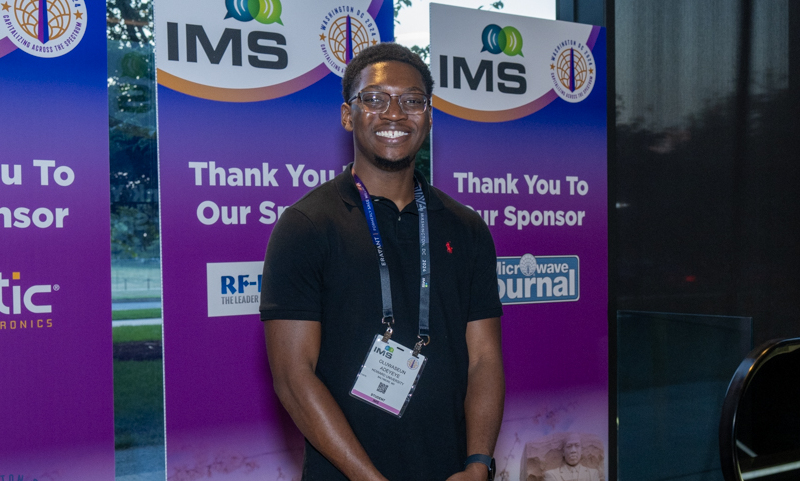
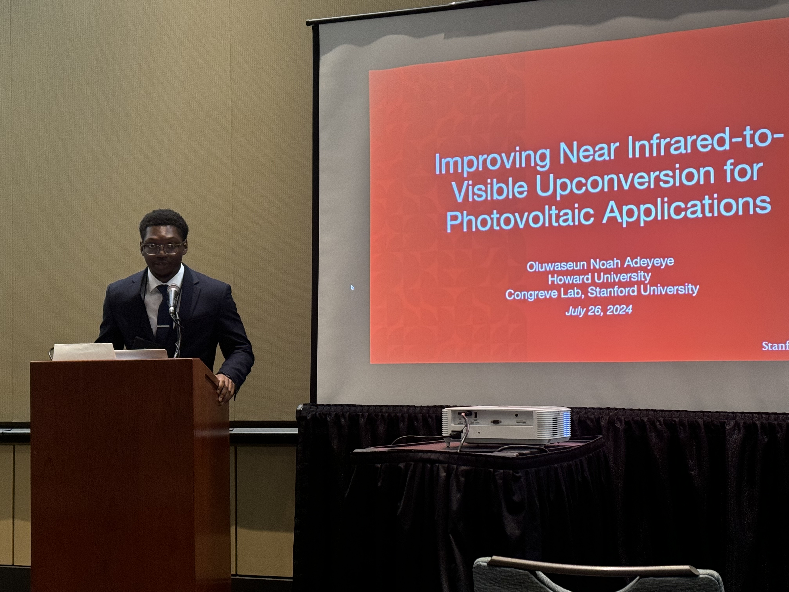
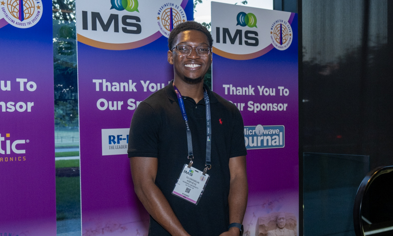
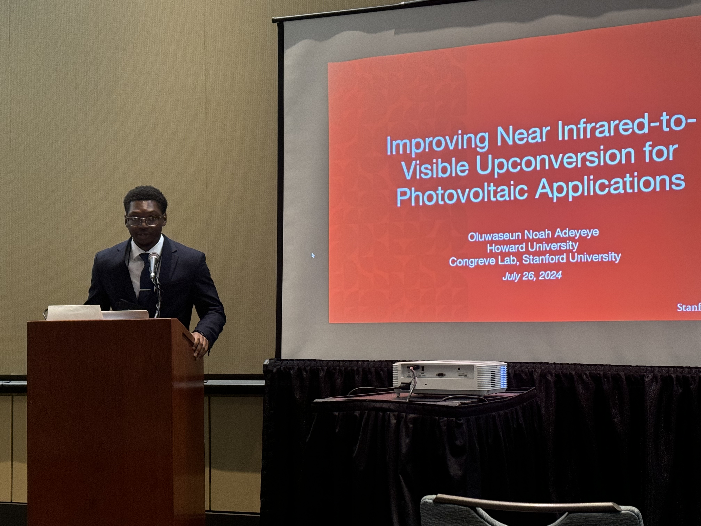

Research

My Research
In Summer 2024, I conducted research at Stanford University under the guidance of Dr. Daniel Congreve and graduate student Pournima Narayanan. My work focused on upconversion, a process that converts low-energy photons into higher-energy photons using organic and inorganic semiconducting materials. Specifically, I explored near-infrared-to-visible upconversion, which has promising applications in fields like photovoltaics, night vision, and anti-counterfeiting. A significant challenge in this technology is its low efficiency, often due to the limited photoluminescence quantum yields of the emissive materials. In our study, we investigated various emitters and optimized device architectures to improve upconversion efficiency, achieving record-breaking results. This research represents a critical step toward making upconversion materials viable for real-world applications.
In Summer 2023, I interned at NASA's Jet Propulsion Laboratory, working with Dr. Pin Chen and Dr. Su Yan on optimizing pupil-apodization basis sets for telescope-coronagraph design. My project involved transitioning code from C++ to Julia to develop a simulation tool for minimizing solar interference in telescope imagery. This transition required extensive code conversion, debugging, and testing. Despite the technical challenges, I successfully implemented key functions to generate and visualize pupil designs using Julia. The project made significant strides in optimizing coronagraph designs, contributing to advancements in telescope technology.
During the academic year at Howard University, I continued my research with NASA JPL under Dr. Su Yan, focusing on refining the Julia code I had developed during the summer. This ongoing work involves testing and validating the simulation tool, solving generalized eigenvalue problems (GEVP), and ensuring the accuracy of coronagraph pupil designs. By improving the tool's functionality and reliability, my research aims to enhance telescope-coronagraph design and expand its applications, while also contributing to the open-source resources available for this field.
Why Research?
My passion for research stems from a desire to use technology to improve lives. As I prepare to pursue a Ph.D. in Electrical Engineering, I am motivated by the belief that research has the potential to drive transformative innovations that can make a meaningful impact on the world.
Presenting Research
 

Research at Stanford
Research with Congreve Lab
Research with NASA JPL
Dr. Su Yan's Research Group
Research with Howard
Laser Spectroscopy Laboratory